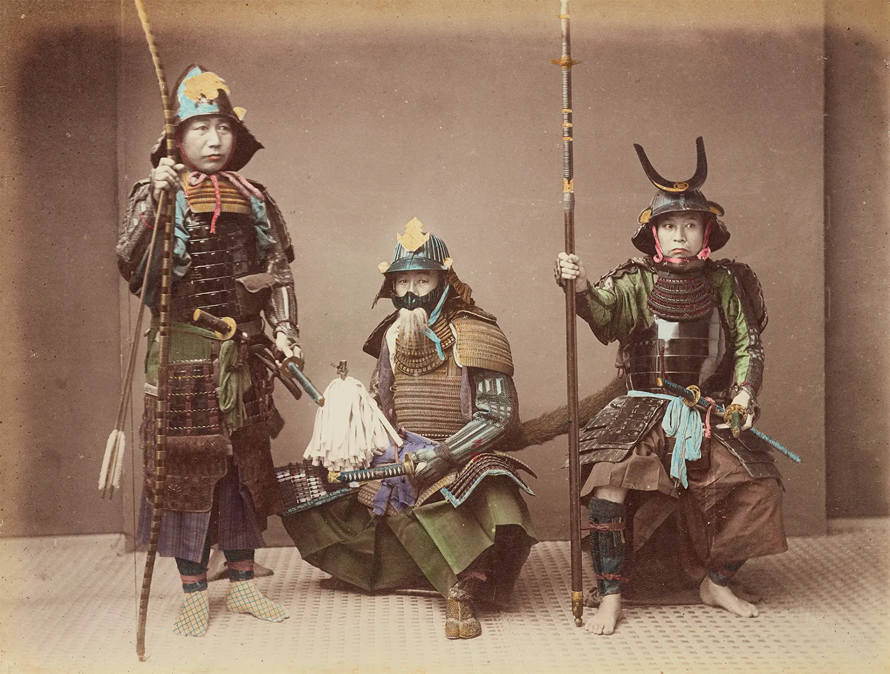
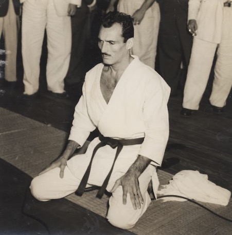
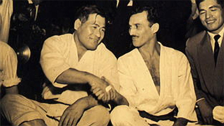

.png)

.png)
The Ancient Roots of Grappling
How did Brazilian Jiu Jitsu start? If we want to explore the history of BJJ, we first have to look at its predecessor: Japanese Jiu Jitsu. And before we explore Jiu Jitsu, we have to go even further back to the history of grappling. No one can say for sure how grappling came around. We can only go by assumptions based on historical narratives of different schools of martial arts. Or some incidental records and illustrations in ancient manuscripts.
It might not even have originated from a single location. Humans have the instinct of self-preservation, so it would only be rational to assume that they will develop different methods for that purpose.
At some point, humans must have found inspiration to take advantage of the body's natural movements. The development of such methods may have taken various twists and turns. But since the common ground is the body's natural mechanics, the endpoint is they all couldn't have been too different from each other.
This probably explains why there are records of arts similar to Jiu Jitsu all over the world. But then again, this is all based on logical assumption, so we can't say for sure.
There are many theories as to how people from different places discovered and developed grappling. Let's not get off-track quite yet though. Let's first focus on what matters to the history of BJJ.
Japanese Jiu Jitsu
The history of Jiu Jitsu dates back to the feudal era. Japan was saturated with constant civil war between the 8th and 16th centuries. This was when the warrior class, or what we know as the samurai, were widespread.
These warriors were adept at armed combat. However, as expected in war, people would get knocked off their horses and disarmed. Of course they weren't just going to lie down and wait to die so they developed a system of combat that served as a last line of defence.
The samurai wore heavy armour that severely restricted their mobility, so striking took a lot of effort and did not deliver much force behind it. They found the next viable option and developed it. This resulted in a combat system that used throws, joint locks, and chokes to subdue opponents. This method had an assortment of names, including Hakuda, Yawara, and Kogusoko.
In 1532, the Hisamori Tenenuchi opened the first school in Japanese Jiu Jitsu. Unlike in the history of BJJ where instructors like to be transparent, there isn't much to say about Japanese Jiu Jitsu during that time because teachers kept everything secret.
(Some say that they kept things secret so they could tweak the school's story to suit their own needs.)
_in_an_agricultural_school.png)
The feudal civil wars began to die down from the early 1600s. Still, with centuries worth of a bloody history behind Japan, people weren't keen to be comfortable in peace just yet. Following the adage living in peace, but remembering war
, people continued to learn unarmed forms of combat.
And so, that's how Jiu Jitsu continued to develop beyond the feudal era.
Judo
When the feudal era ended, there was no more need for Jiu Jitsu on the battlefield. It had to adapt to become more appropriate for use during peaceful times. Otherwise, it risked prohibition and potentially dying out.
To preserve the art, Cultural Department member and Jiu Jitsu practitioner Jigoro Kano (1860-1938) developed his own version of Jiu Jitsu in the late 1800s. This evolved form of Jiu Jitsu was called Judo, and it allowed people to practise a practical and realistic martial art safely.
The emergence of Judo naturally had a lot of competition from the older form of Jiu Jitsu. That issue was quickly addressed by matching the two up against each other at the Tokyo Police Headquarters. Judo soon became the national martial art of Japan, used by law enforcement in the late 1800s. It continues to be popular even today.
The downside of Judo was that Kano believed groundwork wasn't as crucial as the throw or the takedown. This meant that less attention and effort went into developing it.
Given the forceful nature of Judo, injury became commonplace. Rules were later used to promote a safer practice. As a result, Kano's students incurred fewer injuries, so they were able to train more. This increased their training time and drastically increased their abilities.
Kano's Jiu Jitsu, now called Kodokan Judo, has been diluted from the original form of Jiu Jitsu. However, it still had enough techniques to preserve its practical applicability somewhat.
(There is a theory that Japan used Judo to hide the effectiveness of Jiu Jitsu from the modern world. Many American soldiers came to Japan during World War II and left, bringing the knowledge of Judo with them.)
Approximately 30 years after Judo's founding, a journey to Brazil by one of Kano's students would set in motion a chain of events that would eventually lead to the creation of the world's most effective ground fighting art.
Now that we know how Jiu Jitsu became Judo, what has that got to do with the history of BJJ?
Brazilian Jiu Jitsu
The end of conflict meant a period of confusion for martial arts. More sport-based systems began to arise, and what used to be practical martial arts soon lost their use and gained the label of traditional. Traditional schools practised techniques no longer applicable to modern-day combat.
With no way to safely apply traditional techniques, martial arts practice became like swimming without water. Traditional Japanese martial arts soon gained the reputation of being unrealistic and received heavy criticism for it.
Jiu Jitsu regained its glory as a practical martial art thanks to Mitsuyo Maeda.

Mitsuyo Maeda, a sumo fighter's son born in Funazawa Village, located in Hirosaki City, in the Japanese prefecture of Aomori, on November 18, 1878, and deceased in Belém, capital of the Brazilian state of Pará, on November 28, 1941. Mitsuyo Maeda began training at the Kodokan in 1894, eventually becoming one of Kano's top students. While well-versed in throws and takedowns, Maeda's specialty was ground fighting, also known as newaza.
Maeda traveled to the U.S. in 1904 accompanied by other teachers from Jigoro Kano's school. At the time, thanks to the political and economic bonds between Japan and the U.S., the Japanese techniques had many a noteworthy admirer on American soil.
In 1903, for example, President Theodore Roosevelt had taken lessons from Yoshiaki Yamashita. In the U.S., the agile Japanese man began racking up thousands of combats and fallen opponents along the way in England, Belgium and Spain, where his poise resulted in the nickname by which he became better-known, Count Koma. Back in America, the fighter did many presentations and challenges in El Salvador, Costa Rica, Honduras, Panama, Colombia, Ecuador, Peru, Chile and Argentina. In July 1914, the valiant 5-foot-5, 68kg fighter landed in Brazil to settle down and change the sport's history.
Maeda would go on to collect delicious stories on Brazilian land. After going around the country, the Jiu-Jitsu black-belt settled in Belém. One day he took on the challenge of a capoeira artist known as Pé de Bola, towering over the master at 6-foot-3 and nearly 100kg. Maeda was not impressed and even let his rival bear a knife in the match. The Japanese disarmed, took down and finished off the Brazilian. Count Koma, as later became a tradition among Jiu-Jitsu professors, would also challenge famous boxers. American boxer Jack Johnson was called out, but never accepted the invite.
Koma and crew in Cuba, 1912. Fabio Quio collection
It was Koma, also, who promoted the first Jiu-Jitsu tournament in the country - more accurately a festival of bouts and challenges designed to give notoriety to the unknown sport.
Researchers Luiz Otávio Laydner and Fabio Quio Takao found in the newspaper Gazeta de Notícias of March 11, 1915 the rules of the event slated for the Carlos Gomes Theater in Rio de Janeiro, then the country's capital. In it Koma published the first rules of our Jiu-Jitsu, consisting of ten items:
- Every fighter must present themselves decently, with fingernails and toenails perfectly trimmed;
- They must wear the gi, provided by Count Koma;
- It is forbidden to bite, scratch, head-butt or punch;
- When the athlete uses their foot, they must never use its tip, but instead the curve;
- The fighter whose back is on the ground is not defeated, even if they were the first one to fall;
- The fighter who is defeated must signal their forfeit by tapping either the mat or their opponent's body thrice;
- The referee will deem defeated the fighter who, due to some contingency, cannot remember to tap to signal their forfeit;
- The matches will be divided into rounds of five minutes with two-minute resting periods interposed between them. The referee will count the minutes aloud for the benefit of the audience;
- If the fighters fall off the mat without either one having forewarned of it, the referee must force them to return to the center of the mat, standing and facing one another;
- The jurors may replace the referee in his duties. Neither the enterprise nor the winning fighter is responsible for whatever harm may befall the loser if, due to tenacity, that fighter refuses to signal forfeit.
* "Medical doctors, members of the local press, and professors of physical education and fencing are invited to take part in the jury."
In 1917, a young Carlos Gracie would witness Maeda topple and subdue the area's giants in Belém. Being friends with Gastão Gracie, father to Carlos, Maeda agreed to take the eager boy under his wing.
Carlos proved a faithful student, growing by leaps and bounds and even infusing his brothers with love for the art. Soon enough, he would pass on his knowledge to his siblings, including the youngest, Helio Gracie. Hélio, had difficulty executing judo's techniques due to his diminutive size and lack of strength. Consequently, he began to make adjustments to the judo techniques he had learned, refining them until they could be applied by anyone, regardless of size or strength. It was from these innovations that BJJ was born. Together, the family established the Gracie Academy, the first-ever school in the history of BJJ.
Gracie Jiu Jitsu
Now, we're getting to the most significant person in the history of BJJ. Helio Gracie was a frail boy. He was very small, and he had fainting spells that no one knew the cause of. As the doctor recommended, he would sit and listen by the sidelines as his brothers taught. In terms of Jiu Jitsu, no one expected much of him.
One day, a student came while Carlos was away. With the theoretical knowledge already memorized, Helio offered to start the class. Carlos would apologize for the delay when he came back, only to be met with praise for Helio and a request to have the following classes with him as well. Carlos agreed. And so, the small, frail boy officially became an instructor.
BJJ, as we know it today wouldn't be without Helio. After becoming an instructor, he soon had some discoveries. The biggest one was that techniques he learned from Carlos were forceful and proved challenging for him to execute.
He was determined to make things work though. So he modified practically every single technique In consonance with the tactics of Count Koma, to work for little guys without much strength.
Helio emphasized the principle of leverage and technical accuracy over speed and power. Through endless rounds of trial and error, he created the Gracie style of Brazilian Jiu Jitsu.
Of course, it wasn't that easy to create an entirely new style. He had to prove that it worked.
So he did. By openly challenging all the reputable martial artists in Brazil.
He fought 18 times, including matches against world champions and top-ranking Judoka. His adventures soon brought him against Japan's best Jiu Jitsu fighter, Masahiko Kimura. Kimura was 80 pounds heavier than Helio. And Helio did lose that match, but Kimura was so impressed that he asked to bring Helio to Japan.
Besides the challenges, the championships featuring practitioners, with rules exclusive to Jiu-Jitsu, were gaining momentum, fueled by rivalries of dozens of different academies. In the 1960s, when Carlson Gracie had already taken his uncle Helio's baton as the clan's front line in vale-tudo, an important step was taken towards the consolidation of sport Jiu-Jitsu. In 1967 the Guanabara Jiu-Jitsu Federation, in Rio, was created under the authorization of the country's National Sports Confederation. Among the still-primitive rules, moves like takedowns, frontal mounts with both knees on the ground and the back-take yielded one point. Match duration for the adults category was set at five minutes, with three minutes overtime. Jiu-Jitsu had gained time controls and a scoring system.
The president of the Federation was Helio Gracie, and the president of the Consultative Council was Carlos. His first-born, Carlson, was director of the technical department. The first technical vice-director was Oswaldo Fadda, and the second was Orlando Barradas - both of them Jiu-Jitsu professors. João Alberto Barreto, a notable pupil of the Gracie's, was named director to the teaching department, whose vice-director was one of Carlson's brothers, Robson Gracie - each of them a grandmaster of the art nowadays.
The art of BJJ continued to evolve over the years, eventually incorporating aspects of wrestling and other grappling arts into the curriculum. However, BJJ would remain relatively unknown outside of Brazil until Hélio's son, Rorion, immigrated to the United States to spread the art of BJJ—a move that would forever change the way the world viewed the art of fighting.
Royce Gracie And The Ultimate Fighting Championship

Rorion Gracie arrived in the United States in the late 1970s. Anxious to expose the public to his family's art, and drawing inspiration from the challenge matches that had been taking place in Brazil since BJJ's founding, Rorion and a business partner began to lay the groundwork for a martial arts tournament intended to demonstrate the effectiveness of BJJ. This contest, which they named the Ultimate Fighting Championship (UFC), had few rules and pitted martial artists of various disciplines against one another in a one-night, single-elimination tournament. Confident in his family's art, Rorion believed that the UFC would provide the ultimate showcase for BJJ.
The first UFC (UFC 1) took place in 1993, and Rorian appointed his younger brother, Royce, as BJJ's representative in the tournament. Rorian believed that Royce, with his slender build and unassuming appearance, was the ideal person to introduce BJJ's effectiveness to the world. As the tournament got underway, Royce, the event's smallest participant, dominated opponent after opponent, shocking spectators who expected the little Brazilian in the white gi to be easily defeated.
For many, Royce's victory was a revelation, it really was possible to defeat bigger, stronger opponents with the proper use of technique and leverage. Royce would go on to win the next several UFC events, and martial artists all over the world would begin to seek out instruction in the art of BJJ. After several centuries of development, the BJJ revolution had begun.
On another front, Carlos Gracie Jr. picked up his father's work organizing championships and strengthening the art as a regulated sport. Thus the International Brazilian Jiu-Jitsu Federation (IBJJF) was created in 1994, and these days it promotes tournaments overflowing with over 3,000 athletes from more than 50 countries, such as the World Championship, held annually since 1996.
One century after Count Koma disembarked in Brazil, our Jiu-Jitsu today can be practiced from Alaska to Mongolia, from Abu Dhabi to Japan.
The rest of this story continues to be written by each white-belt who steps into a Jiu-Jitsu gym for the first time.